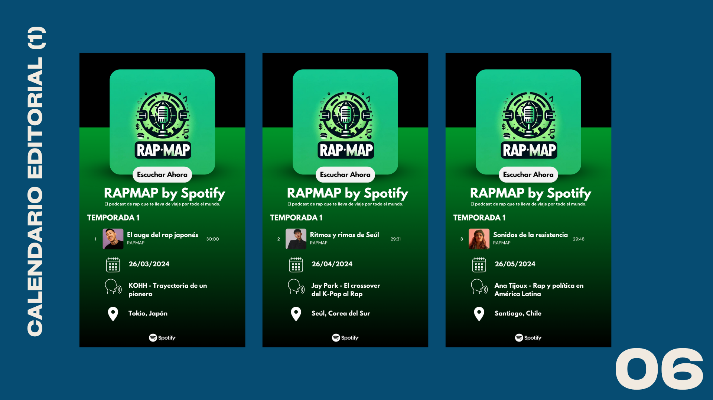
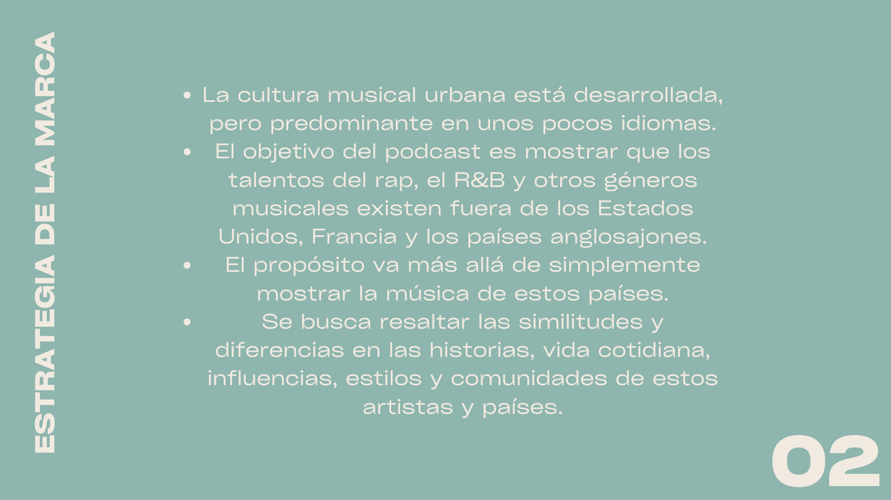
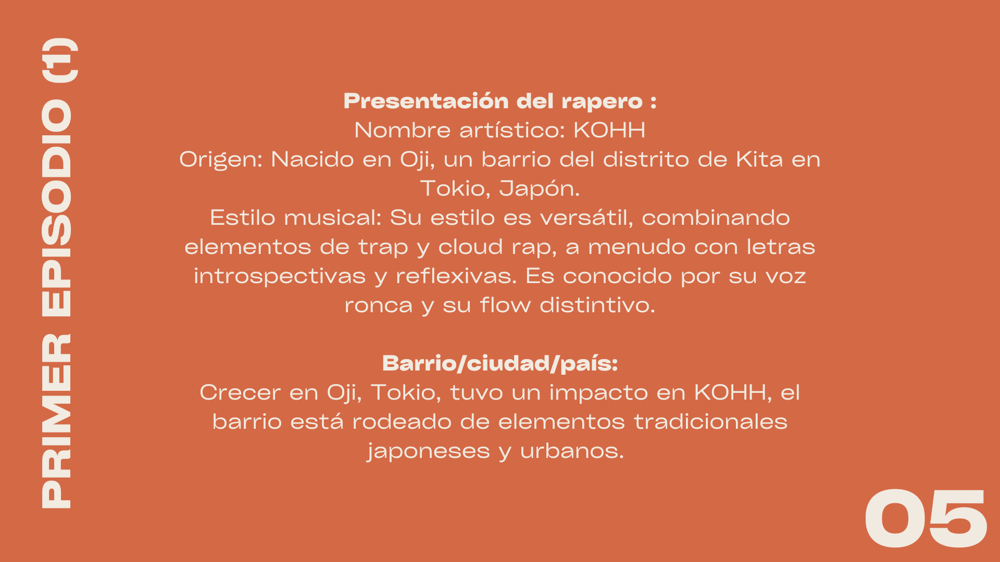
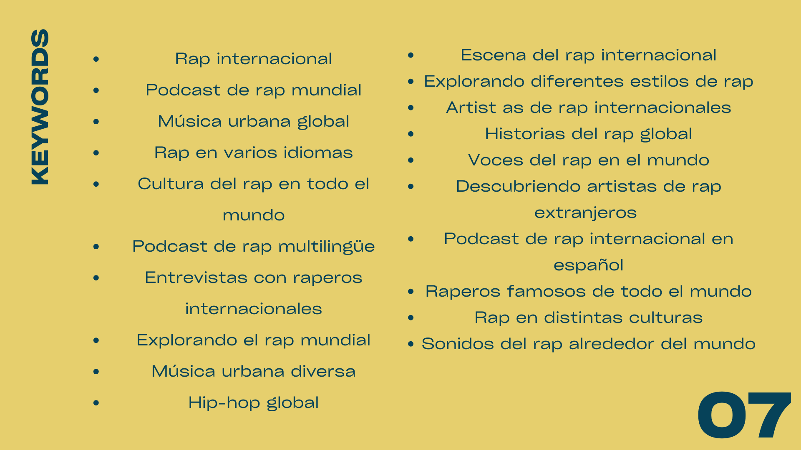
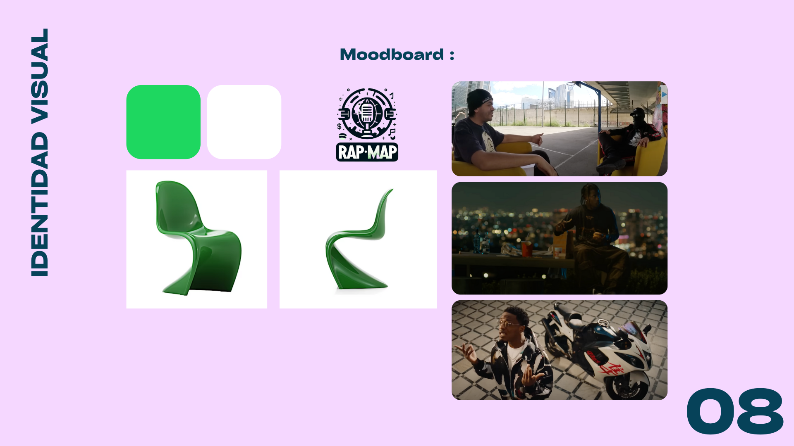

RapMap : El Nuevo Podcast
When creating the podcast RapMap: El Nuevo Podcast, we explored a subject that we're passionate about: rap on an international scale. This project allowed us to analyze the influence of rap in different cultures and observe the dynamics that shape its evolution around the world.
Skills Developed :
- Identification of a partner brand and target audience : Study of potential collaborators and definition of a precise audience to adapt our editorial line and communication.
- Podcast design : Development of the concept, structuring of episodes, and establishment of an engaging guideline.
- Creation of a pilot and editorial calendar : Production of a test episode and development of a strategic schedule to ensure regular broadcasting.
- Development of a strong visual identity : Design of an appropriate graphic charter to enhance the attractiveness and recognition of the podcast.
- Search engine optimization : Identification of relevant keywords and implementation of an SEO strategy to improve visibility on listening platforms.
This project was an enriching experience, combining creativity, strategy, and technique, and gave me a better understanding of the inner workings of podcasting and digital marketing applied to the music field.
Visualize or download the complete PDF by clicking on it.
    